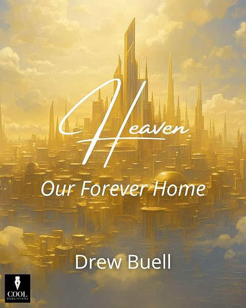
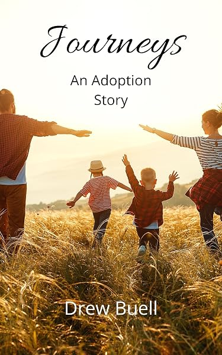

The Catalog
Nine books in print
Every title is available on Amazon. Select a cover to go to its page.
Advent & Christmas

Scripture & Doctrine
 2026Believe…The opening chapters of John, where the Word becomes flesh and every sign asks one question: will you believe?
2026Ten Words to Build Your Life OnThe Ten Commandments: what they reveal about God, what they expose in us, and how they point to Christ.
2026Believe…The opening chapters of John, where the Word becomes flesh and every sign asks one question: will you believe?
2026Ten Words to Build Your Life OnThe Ten Commandments: what they reveal about God, what they expose in us, and how they point to Christ.

2025Heaven: Our Forever HomeA biblical look at what happens after death and why the resurrection changes how we live now.Church & Family
2025I Still DoEncouragement for lifelong covenant faithfulness in marriage, for newlyweds and for those many years in.
 2019Membership MattersWhat church membership is, why it matters, and what it means to belong to a body.
2021We Are Not Descended from Fearful MenFive sermons from 2020 calling American Christians to refuse to live in fear.
2019Membership MattersWhat church membership is, why it matters, and what it means to belong to a body.
2021We Are Not Descended from Fearful MenFive sermons from 2020 calling American Christians to refuse to live in fear.

2022Journeys: An Adoption StoryFour newborn siblings, four adoptions in under 39 months, and the families God brought them to.2019Membership MattersWhat church membership is, why it matters, and what it means to belong to a body.
2021We Are Not Descended from Fearful MenFive sermons from 2020 calling American Christians to refuse to live in fear.
Read & Watch
Between books
The newest essays and sermons appear here on their own as they're published.
Latest on SubstackAll essays →
Subscribe on Substack
Latest on YouTubeThe channel →
The player opens on the newest upload. Use the playlist button in its corner to see earlier sermons.
FacebookFollow Drew for updates and new releases →On the Desk
Books in progress
Most of these begin as sermons at Cool Community Church. Subscribe on Substack to hear when each one is released.
Editing · Gospel of John
Believe, Volumes 2 & 3
The expositional series through John continues, chapter by chapter.
Drafting · Doctrine
The Doctrines of Grace
Unconditional election, particular redemption, and the rest of the doctrines of grace, as a standalone book.
Working titleDrafting · Philippians
Unexpected Joy
A devotional that moves passage by passage through Paul's letter of joy.
On Substack · Colossians
The Preeminence of Christ
Essays from Colossians and Philemon, published as they're written, on the supremacy of Christ.
Working title